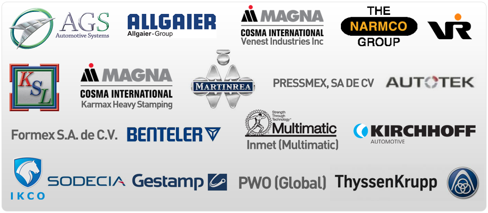
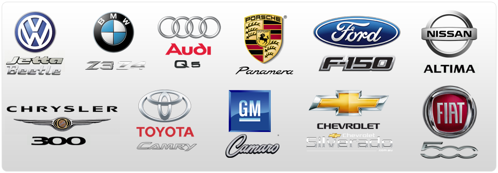

Your Reliable, Single Source Supplier of Tooling for the Metal Forming Industry.
The Duradie team combines the latest in technology with our focus on customer satisfaction to deliver precision cast and steel tooling. From design to part approval the entire tooling process is conducted in-house at our state-of-the-art facility. We are dedicated to strict quality control through ISO 9001 certification, with work that meets and exceeds advanced international standards.
The Duradie Mission
Deliver quality work and exceptional service on-time, every time.
Duradie Technologies Inc. History
Duradie Technologies Inc. is an internationally renowned supplier of tooling for the metal forming industry. Established in 1993, and beginning with only 6 employees, Duradie has grown into one of the leading North American Tool & Die companies. With a state-of-the-art facility in excess of 32,000 sq. ft., we specialize in large and complex automotive tooling – designed and built under one roof. Our capabilities and services include 3D Cad design, solid modeling,computer draw simulation and analysis, prototype manufacturing, die build, tryout, laser cutting, waterjet cutting and part certification (PPAP) – inculding full part CMM layouts, gauge studies, and part capability (CPK / PPK) studies.
Our customers are international and recognize Duradie as the best single source for quality tooling, reliability and on-time delivery.
Company Philosophy
The Duradie Philosophy “Precision tooling and Customer satisfaction” on time, every time.
At Duradie our approach is one of partnership with our customers. By working with you throughout the tooling process, we are able to deliver a final product that meets your needs and your timetable, while providing you with the peace of mind necessary to pursue other tasks. We have brought together the expertise and technology needed to complete any tooling project under one roof to deliver the best service possible and maintain the highest standards of quality.
We understand that timing and precision are key to the success of your venture, and as such, have built our processes to meet these challenges. From the beginning Duradie has been committed to customer satisfaction and innovation as the best route to growth. To this day, these precepts have not changed and continue to form the basis of our ongoing success along with lasting relationships with our customers and suppliers.
Management / Owner Operators
Laurence Smith lsmith@duradie.com
Wayne Leymann wleymann@duradie.com
Satisfied Clients

Duradie tooling has been used in the production of some of the most prestigious automobile brands in the world. Some examples include:
